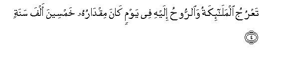
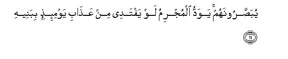

بسم الله الرحمن الرحيم
Sayyid Abul Ala Maududi - Tafhim al-Qur'an - The Meaning of the Qur'an
 70.
Surah Al Maarij (The Ascending Steps)
70.
Surah Al Maarij (The Ascending Steps)
The Surah takes its name from the word dhil Ma'arij in verse 3.
The subject matter bears evidence that this Surah too was sent down in conditions closely resembling those under which Surah Al Haaqqah was sent down.
It admonishes and gives warning to the disbelievers who made fun of the news about Resurrection and the Hereafter, and Hell and Heaven, and challenged the Holy Prophet (upon whom be peace) to cause Resurrection with which he threatened them to take place if what he said was true and they had become worthy of the punishment in Hell by denying it. The whole Surah is meant to answer this denial.
The Surah opens with words to the effect:"A demander has demanded a torment, the torment which must befall the deniers; and when it takes place, there will be none to prevent it, but it will take place at its own appointed time. Allah has His own way of doing things, but He is not unjust. Therefore, have patience, O Prophet, at what they say. They think it is far off, but We see it as near at hand."
Then it is said:"Resurrection, which they desire to be hastened out of jest and fun, is terrible, and when it comes, it will cause great distress to the culprits. At that time they will even be prepared to give away their wives and children and their nearest kinsfolk in ransom to escape the punishment, but they will not be able to escape it.
Then the people have been warned to the effect; "On that Day the destinies of men will be decided strictly on the basis of their belief and their conduct. Those who turn away from the Truth in the world and amass wealth and withhold it from the needy, will be doomed to Hell; and those who fear the punishment of God here, believe in the Hereafter, keep up the Prayer, discharge the rights of the needy out of their wealth, strictly avoid immoral and wicked deeds, practice honesty in all their dealings, fulfill their pledges and trust and bear true witness, will have a place of honor in Paradise"
In conclusion, the disbelievers of Makkah who rushed in upon the Holy Prophet (upon whom be peace) from every side as soon as they saw him, in order to make fun of him, have been warned to the effect: "If you do not believe, Allah will replace you by other people who will be better than you", and the Holy Prophet (upon whom be peace) has been consoled, so as to say: "Do not take to heart their mockery and jesting; leave them to indulge in their idle talk and foolish conduct if they are bent upon experiencing the disgrace and humiliation of the Resurrection; they will themselves see their evil end."'

In the name of Allah, the Compassionate, the Merciful.



[1-18] A demander has demanded a torment,1 which must befall. It is for the disbelievers. There is none to avert it. It will come from that God Who is the Owner of the Steps of Ascent.2 The angels and the Spirit3 ascend to His Presence4 in a day whose measure is fifty thousand years5 So, have patience, O Prophet, a graceful patience.6 They think it is far off, but We see it as near at hand.7 (The torment shall befall on the Day)8 when the heavens shall be like molten silver,9 and the mountains like carded wool of different colors.10 And no close friend shall ask after his close friend, though they will be shown to each other.11 To save himself from the torment of that Day, the culprit shall wish to give his children, his wife, his brother, his kinsfolk who gave him shelter, and all the people of the earth, in ransom that this device might rescue him. No, never! It will be the flame of the blazing Fire, that will eat up the very flesh. It shall summon to itself every such person who drew away and turned his back and amassed wealth and guarded it jealously.12

[19-35] Indeed, man has been created impatient.13 When affliction befalls him, he becomes fretful, and when good fortune falls to his lot he becomes stingy. But those people (are an exception) who are the performers of salat.14 Who are steadfast and ever constant in regard to their salat.15 In whose wealth there is a due share of the beggar and the needy.16 Who believe in the reality of the Day of Recompense.17 Who dread the torment of their Lord.18 For from the torment of their Lord none can feel secure; who guard their private parts.19 Except with regard to their wives and those women who are legally in their possession, for in their case they are not blameworthy, but those who go beyond this are indeed transgressors.20 Who keep their trusts and honor their promises.21 Who bear true witnesses.22 And who strictly guard their salat.23 These are they who shall live with honor in the Gardens of Paradise.
[36-44] So, O prophet, what is the matter with the disbelievers that they are rushing in towards you, from the right and from the left, in groups?24 Does everyone of them cherish the desire that he will be admitted into the Garden of Bliss?25 No, never! They themselves know of what We have created them.26 Not so!27 I swear by the Owner of the East’s and the Wests28 that We have the power to replace them by better people than they, and there is none to outstrip Us.29 Hence, leave them engrossed in their vain talk and sport until they encounter that Day of theirs which they are being promised, when they shall be rushing out of their graves as though racing towards the shrines of their deities.30 Their eyes shall be downcast and abasement shall be covering them. That is the Day which they are being promised.
1Some commentators have taken the verb sa'ala in the Text in the meaning of asking, and have interpreted the verse to mean: "The asker has asked: whom will the torment with which we are being threatened befall'" And Allah has answered it, saying: "It will befall the disbelievers." But most of the commentators have taken sa'ala here in the meaning of demanding. Nasa'i and other traditionists have related a tradition from Ibn 'Abbas, and Hakim hold it as authentic, that Nadr bin al-Harith Kaladah had said "O God, if it is really the Truth sent dawn by You, then rain down stones on us from the heavens, or send down any other painful torment on us." (AI-Anfal: 32). Apart from this, at several places in the Qur'an the disbelievers' this challenge has been related: "Why don't you bring down on us the torment that you threaten us with?" For instance, see Yunus: 4b-48, Al-Anbiya': 36-41, An-Naml; 67-72, Saba: 26-30, Ya Sin: 45-52, Al-Mink: 24-27.
2Ma'arij is plural of Mi'raj, which means a stairway, or a ladder, or something by which one may go up. To call Allah dhil-Ma'aij (Owner of the Steps of Ascent) means that He is Most High and in order to go up into His Presence the angels have to ascend many heights, one above the other, as has been stated in the following verses.
3"The Spirit": the Angel Gabriel (peace be on him), who has been mentioned separately from the angels in order to impress his unique glory and greatness. In Surah Ash-Shu'ara' it has been said: "The trustworthy Spirit has came down with this Qur'an upon your heart", (v. 193), and in Surah AI-Baqarah "Say to them: whoever is an enemy to Gabriel, should understand that he has, by .Allah's command. revealed upon your heart this Qur'an." (v. 97). These verses when read together show that Ar-Ruh (the Spirit) implies the Angel Gabriel.
4This is an ambiguous theme the meaning of which cannot be determined precisely. We neither have any knowledge of the reality of the angels, nor can understand the nature of their ascent, nor can conceive the stairways on which they ascend. Besides, about Allah also it cannot be imagined that He lives in a particular place, for He is exalted and free froth the restrictions of space and time.
5In Al-Hajj: 47, it has been said: "These people are demanding of you to hasten the torment; Allah will never tail to fulfill His threat, but a day with your Lord is equal to a thousand years as you reckon." In Surah As-Sajdah: 5, it has been said: "He administers the affairs of the world from the heavens to the earth, and the report of this administration ascends (to be presented) before Him in a Day whose length, according to your reckoning, is a thousand years". And here, in response to the demand for the torment, the measure of Allah's one day has been stated to be fifty thousand years. Then the Holy Prophet (upon whom be peace) has been consoled, saying: "Have patience at the demand for the torment which the people make out of jest and fun," and then it is said: "They think it is far off, but We see it as near at hand." When all these verses are read together, what becomes obvious is: "The people, because of their narrow and restricted outlook, measure the time of Allah's decrees by their own scales of time and, therefore, consider a hundred years or so to be a very lengthy period, whereas in the Divine conduct of affairs there are schemes spreading over a thousand years each, or fifty thousand years each, as you reckon, and this measure also is only by way of example; otherwise schemes in the universe may extend over millions and billions of years as well. Of these one is the scheme under which Mankind has been created on the earth, and a time limit has been set during which it has been allowed to function here. No man can know when this scheme began, what time-limit has been decreed for its completion, what Hour has been appointed for bringing it to an end, when Resurrection will take place, and what time has been fixed for raising all men, born since the beginning of creation till Resurrection, from death simultaneously and calling them to account for their deeds. We only know to some extent that part of the scheme which is passing before us, or a partial history of the past ages which exists with us. As for its beginning and end, to say nothing of knowing it, we do not even have the power to understand it, not to speak of understanding the wisdom which works behind and underlies it. Now the people who demand that the scheme be cut short and its conclusion be brought immediately before them, and if this is not done. they use it for an argument to prove that the universe has no end and conclusion, in fact, present a proof of their own ignorance and folly. (For further explanation, see E.N.'s 92, 93 of Surah Al-Hajj, E.N. 9 of As-Sajdah).
6"A goodly patience": "A kind of patience that behooves a magnanimous person like you."
7This can have two meanings:
(1) "That these people think it cannot possibly take place, and in Our view it is going to take place very soon"; and
(2) "that these people think Resurrection is yet remote and far off, and in Our sight it is close at hand and may occur any moment. "
8A section of the commentators regard this sentence as related to "a day whose measure is fifty thousand years"; they say that the day whose measure has been stated to be fifty thousand years is the Day of Resurrection. In Musnad Ahmad and in the Tafsir by Ibn Jarir, a tradition has been related on the authority of Hadrat Abu Sa'id Khudri, saying: "When wonder and amazement was expressed before the Holy Prophet (upon whom be peace) about the length of this Day with reference to this verse, he replied: 'By Him in Whose hand is my life, the believer will find the Day even lighter (of shorter duration) than the time he takes in performing an obligatory Prayer in the world" . " Had this tradition been reported through authentic channels, this verse could not be interpreted in any other way, but two of its transmitters, Darraj and his teacher Abul Haytham, are both weak and untrustworthy.
9That is, it will change its color over and over again.
10As the colors of the mountains are different, when they are uprooted and they drift about weight less, they will appear like flakes of carded wool of different colors.
11Not so that they will not see each other, therefore they will not ask after each other's welfare, but each will be seeing the other in agony and distress, yet will ignore him, being wholly preoccupied with his own torment.
12Here also, as in Al-Haaqqah: 33-34, two causes have been mentioned of a person's evil end in the Hereafter:
(1) His repudiation of the Truth and refusal to affirm faith; and
(2) his worship of the world and stinginess because of which he amasses wealth and refuses to spend it on any good cause.
13"Man has been created impatient": It is man's nature, or his natural weakness, to be impatient. Here, one should keep in view that at many places in the Qur'an, after making mention of mankind's common moral weaknesses, those who believe and adopted righteousness have been made an exception; the same theme is being expressed in the following verses. This by itself explains the truth that these hereditary weaknesses are not unalterable; if man accepts the guidance sent down by God and tries to reform himself practically, he can remove them, and if he gives a free rope to his self these become ingrained in him deeply. (For further explanation, see E.N. 41 of Al-Anbiya', E.N.'s 23-28 of Az-Zumar, E.N. 75 of Ash-Shura).
14A person's performing the salat necessarily implies that he believes in Allah, His Messenger, His Book and the Hereafter as well as tries to act according to his belief.
15That is, no laziness, or love of ease and comfort, no occupation, or interest, hinders them from being punctual and regular at the prayer. When the Prayer time comes, they abandon every occupation and activity and stand up to perform worship of their God. Another meaning which Hadrat 'Uqbah bin 'Amir has given of ala salat-i-him daa imun is that they perform the Prayer with full peace of mind, tranquility and humility; they do not try to offer the Prayer in a hurry in order to get rid of it somehow, nor think irrelevant things during the Prayer.
16In Surah Adh-Dhariyat: 19, it has been said: "In their wealth there is a right of the beggar and the needy", and here: "In their wealth there is a due share of the beggar and the needy. " Some people have understood this to mean that the "due share" implies the obligatory zakat, for in the zakat both the exemption limit and the rate have been fixed. But this commentary cannot be accepted on the ground that the Surah AI-Ma`arij is unanimously a Makkan Revelation, and the zakat with its specific exemption limit and rate was enjoined at Madinah. Therefore, the correct meaning of the "due share” is that they have of their own accord set aside a share in their possessions of the beggar and needy, which they discharge regularly and honestly. This same meaning of this verse has been given by Hadrat 'Abdullah bin `Abbas, Hadrat `Abdullah bin `Umar, Mujahid, Sha`bi and Ibrahim Nakha`i.
Here, sail does not imply a beggar but a needy person, who asks someone for help, and mahrum implies a person who is jobless, or the one who tries to earn a living but does not earn enough to meet his needs, or the one who has become disabled because of an accident or calamity, and is unable to make a living. About such people when it becomes known that they are destitute, a God worshiper does not wait that they should ask for help, but helps them of his own accord as soon as he comes to know that they are needy and stand in need of help. (For further explanation, see E.N. 17 of Surah Adh-Dhariyat).
17"Who believe ... Day of Recompense": who do not think they are irresponsible but believe that one Day they will have to appear before their God and render to Him an account of their deeds.
18In other words, they are not like the disbelievers, who do not fear God even after they have committed every heinous sin and crime and perpetrated every cruelty in the world, but they, in spite of having adopted a righteous attitude in morals and deeds as best as they could, fear God and continue to remain in constant awe lest their shortcomings should exceed their good works before Him and they should be declared as worthy of punishment. (For further explanation, see E N. 54 of Al-Mu'minun, E.N. 19 of Adh-Dhariyat).
19"Who guard their private parts": who abstain from adultery as well as from nudity and exposing their private parts before others. (For explanation, see E.N 6 of Al-Mu'minun, E.N.'s 30, 32 of An-Nur E.N. 62 of Al-Ahzab).
20For explanation, see E.N. 7 of Al-Mu'minun.
21"Trusts" imply those trusts which Allah has entrusted to men as well as those which one man entrusts to another because of faith and confidence. Likewise, "promises" imply those promises which man makes with his God as well as those which one man makes with another. Keeping and fulfilling both these kinds of trusts and promises is a necessary characteristic of a believer. In a Hadith Hadrat Anas (may Allah bless him) has reported that when ever the Holy Prophet (upon whom be peace) addressed his Companions, he would always give them the instruction: "Beware, the one who does not keep his trust has no faith, and one who does not fulfill his pledges, has no religion." (Baihaqi. Ash-Shu ab al-Imam).
22That is, they neither conceal evidence nor change it in any way for selfish motives.
23This gives an idea of the importance of the Prayer (salat). The description of the merits of the high and sublime character of those who have been declared as worthy of Paradise, began with the Prayer and has been concluded with it. To be a performer of the Prayer is their first characteristic, to be steadfast and ever constant with regard to the Prayer is their second characteristic, and to guard their Prayer is their last characteristic. "Guarding the Prayer" implies many things: to perform the Prayer at its right time, to make sure before the Prayer that one's body and clothes are clean and pure, to have performed the ablutions and to have washed the limbs well, to perform the basic elements of the Prayer with its obligatory and desirable parts with due care and attention, to observe the requisite rites of the Prayer carefully, to avoid disobedience of God, which is destructive of the Prayer; all these are included in the guarding of the Prayer.
24This refers to those disbelievers who would rush in towards the Holy Prophet (upon whom be peace) from every side to mock and ridicule him when they heard him preach Islam and recite the Qur'an.
25It means that God's Paradise is only for those righteous people whose characteristics have just been described above, Now, can these people who are not at all inclined to listen to the truth and who are rushing in towards the Prophet in order to suppress every invitation to the truth, be candidates for Paradise? Has God prepared His Paradise only for such people as they? Here, one should also keep in view vv. 34-41 of Surah AI-Qalam in which an answer has been given to this saying of the disbelievers of Makkah: "Even if there is any life after death, we shall have good time there too, as we are having in the world, and the torment would befall Muhammad (upon whom be Allah's peace and blessings) and his followers and not us."
26Here, this sentence can have two meanings:
(1) If it is taken to be related to the preceding theme, it will mean: As for the substance these people have been created from, all men are equal. For if the substance itself be the cause of man's entry into Paradise, then the good and the bad, the wicked and the just, the guilty and the innocent, all should go to Paradise. But a little common sense is enough to decide that man's qualifications for Paradise are created not on the basis of the substance of his creation but only on the basis of his merit and excellence.
(2) If this sentence is regarded as an introduction to the following theme, it would mean: "These people think they are secure from Our torment and mock the one who warns them of Our punishment, whereas We can punish them even in this world as and when We please, as well as resurrect them after death as and when We like. They themselves know that We began their creation from an insignificant sperm-drop and developed them into a living man. If they had only considered this mode of their creation, they would never have been involved in the misunderstanding that they now have escaped Our grasp, or that We have no power to create them over again."
27That is, the truth is not that which these people think it is.
28Here, Allah has sworn an oath by Himself. The words Easts and Wests have been used because the sun rises and sets at a new angle every day during the year, and goes on rising and setting successively at different times around the globe. Thus considered the Easts and the Wests are not one but many. From another point of view as against the north and the south there is a direction of east and a direction of west. On this basis in Surah Ash-Shu`ara': 28 and AlMuzzammi1:19 the words Rabb-ul-rnashriqi wal-maghrib have been used. From still another view-point the earth has two easts and two wests, for when the sun sets on one hemisphere, it rises on the other. On this basis the words Rabb-ul-mashriqayn wa Rabb-ul-maghribayn (Lord of two easts and two wests) have been used in Surah Ar-Rahman: 17. (For further explanation, see E.N. 17 of Ar-Rahman).
29This is that for which Allah Almighty has sworn an oath of His being Lord of the Easts and Wests. It means: "As We are Owners of the Easts and Wests, the whole earth is under Our control and power, and you have no power to escape Our punishment: We can destroy you as and when We like and can create another people that may be better than you. "
30There is a difference of opinion among the commentators about the meaning of the word nusub. Some have interpreted it to mean idols, according to which the meaning would be: "They would be racing towards the place appointed by the Lord of Resurrection as they race today towards the shrines of their idols" ; and some others have taken nusub to mean the goal signs which are set for the competitors in a race, so that each tries to reach and touch the appointed post before the other.